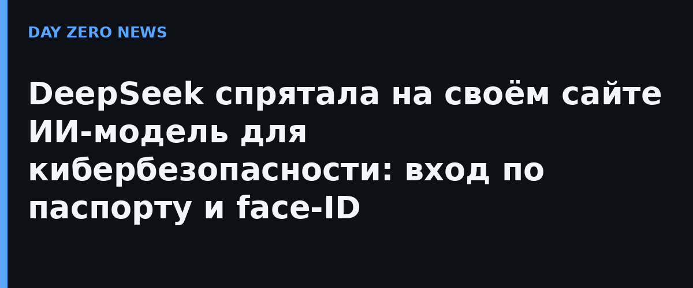

30 октября сразу несколько разработчиков заметили в фронтенде официального сайта DeepSeek маршруты и интерфейсы, которых в публичных описаниях сервиса нет. Страница заявки лежит по адресу /usage/model-application и закрыта feature-gate: аккаунт без допуска просто возвращает на страницу лимитов. В коде нашлись интерфейсы создания «Cyber Key» и управления квотами, а также два набора шаблонов заявки — для физлиц и для компаний.
Из всплывших идентификаторов следует, что моделей как минимум две: cyber-personal-v3 для частных специалистов по безопасности и cyber-enterprise-v4 для организаций. Индивидуальный доступ требуют подтвердить личностью: паспортные данные и проверка лица. Компаниям помимо документов на юридическое лицо нужно приложить свидетельство о регистрации и доверенность. Общие условия для всех: верифицированный аккаунт, регистрация в материковом Китае с местным номером телефона и отсутствие нарушений за последние 90 дней. Процедура — заявка, ручная проверка, затем выдача отдельного ключа Cyber Key.
DeepSeek никогда публично не анонсировала собственную «кибер»-версию модели, а между тем направление стало горячее не на пустом месте. В октябре китайский open-source пентест-фреймворк ARTEX связали с волной автономных ИИ-атак на компании Южной Кореи и Японии, и с тех пор каждый шаг крупных лабораторий в области ИИ-безопасности на слуху. При этом тестировщики независимых бенчмарков ещё раньше отмечали, что агентные модели DeepSeek уверенно выглядят именно в задачах поиска уязвимостей. Похоже, компания решила не отдавать эту нишу сторонним обёрткам, а построить собственный сервис — с жёстким KYC, серой зоной тестирования и раздельными тарифами для физлиц и бизнеса.
Схема «допуск только после проверки личности и ограниченный круг тестировщиков» — прямой ответ на критику прошлых лет:открытые модели критиковали за то, что их способности к взлому доступны кому угодно без всякого контроля. Здесь DeepSeek, наоборот, строит забор: модели закрытые, ключи именные, юрлица — с документами. Если сервис выйдет из серой тестовой зоны, у Anthropic с её Claude для оборонных задач и Google со специальной Cyber-версией Gemini появится ещё один конкурент — с китайской пропиской.
Отдельного официального анонза нет: все факты получены из кода официального сайта DeepSeek и пересказа IT之家, компания молчит.